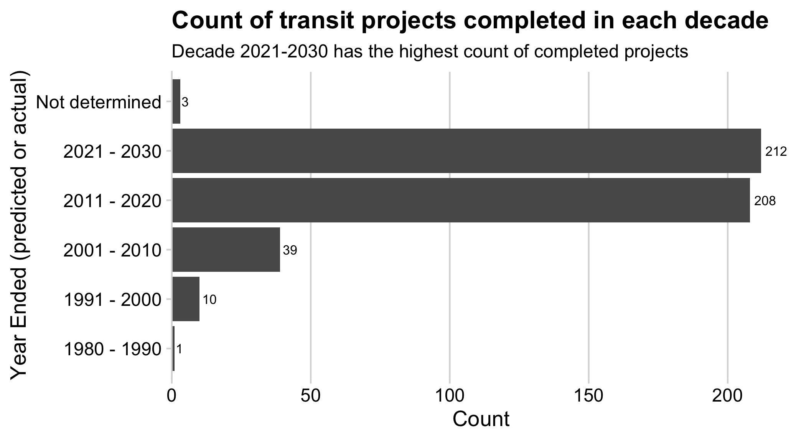
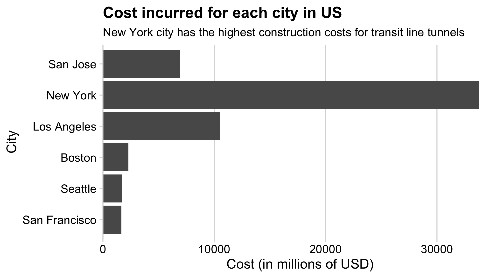
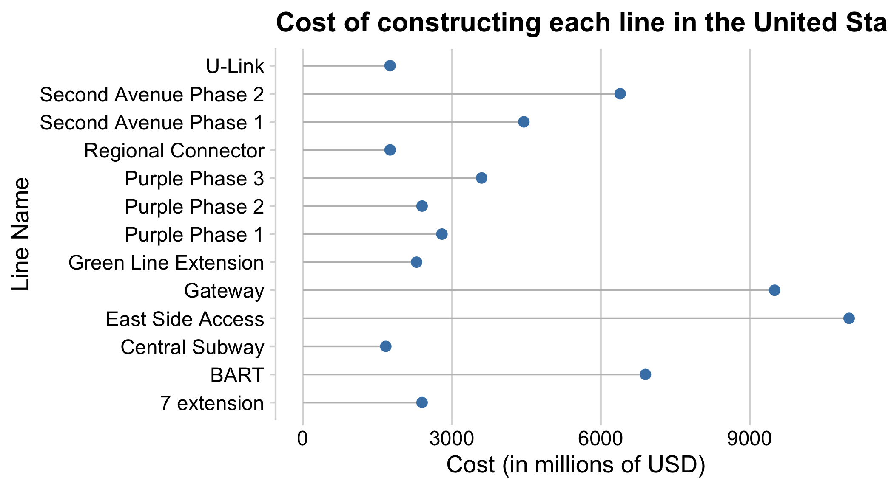
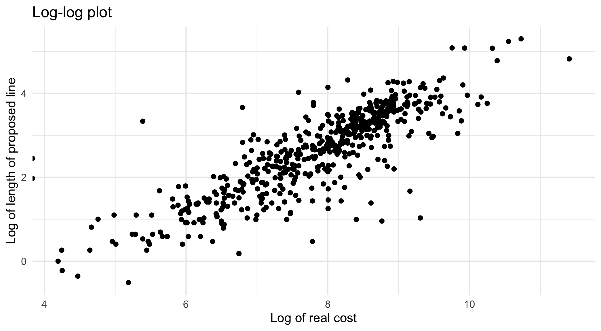

df <- read_csv(here("data", "transit_cost.csv"), show_col_types = FALSE)Mini Project 2: Exploring Data
1. Load the data
2. Document the data
Data file name: transit_cost.csv
Original Source: https://transitcosts.com/
Source of downloaded file: https://github.com/rfordatascience/tidytuesday/tree/master/data/2021/2021-01-05
Description: The data contains the costs of hundreds of transit projects around the world collected by the Transit Costs Project. The data span more than 50 countries and totals more than 11,000 km of urban rail built since the late 1990s.
Dictionary of data file:
- e : ID
- country : Country Code
- city : City where transit tunnel is being created
- line : Line name or path
- start_year : Year started
- end_year : Year ended (predicted or actual)
- rr : Railroad (0 or 1), where 1 == Railroad?
- length : Length of proposed line in km
- tunnel_per : Percent of line length completed
- tunnel : Tunnel length of line completed in km
- stations : Number of stations where passengers can board/leave
- source1 : Where was data sourced
- cost : Cost in millions of local currency
- currency : Currency type
- year : Midpoint year of construction
- ppp_rate : purchasing power parity (PPP), based on the midpoint of construction
- real_cost : Real cost in Millions of USD
- cost_km_millions : Cost/km in millions of USD
- source2 :Where was data sourced for cost
- reference : Reference URL for source
3. Preview the data
glimpse(df)#> Rows: 544
#> Columns: 22
#> $ e <dbl> 7136, 7137, 7138, 7139, 7144, 7145, 7146, 7147, 7152,…
#> $ country <chr> "CA", "CA", "CA", "CA", "CA", "NL", "CA", "US", "US",…
#> $ city <chr> "Vancouver", "Toronto", "Toronto", "Toronto", "Toront…
#> $ line <chr> "Broadway", "Vaughan", "Scarborough", "Ontario", "Yon…
#> $ start_year <chr> "2020", "2009", "2020", "2020", "2020", "2003", "2020…
#> $ end_year <chr> "2025", "2017", "2030", "2030", "2030", "2018", "2026…
#> $ rr <dbl> 0, 0, 0, 0, 0, 0, 0, 0, 0, 0, 0, 0, 0, 0, 0, 0, 0, 0,…
#> $ length <dbl> 5.7, 8.6, 7.8, 15.5, 7.4, 9.7, 5.8, 5.1, 4.2, 4.2, 6.…
#> $ tunnel_per <chr> "87.72%", "100.00%", "100.00%", "57.00%", "100.00%", …
#> $ tunnel <dbl> 5.0, 8.6, 7.8, 8.8, 7.4, 7.1, 5.8, 5.1, 4.2, 4.2, 6.3…
#> $ stations <dbl> 6, 6, 3, 15, 6, 8, 5, 2, 2, 2, 3, 3, 4, 7, 13, 4, 4, …
#> $ source1 <chr> "Plan", "Media", "Wiki", "Plan", "Plan", "Wiki", "Med…
#> $ cost <dbl> 2830, 3200, 5500, 8573, 5600, 3100, 4500, 1756, 3600,…
#> $ currency <chr> "CAD", "CAD", "CAD", "CAD", "CAD", "EUR", "CAD", "USD…
#> $ year <dbl> 2018, 2013, 2018, 2019, 2020, 2009, 2018, 2012, 2023,…
#> $ ppp_rate <dbl> 0.840, 0.810, 0.840, 0.840, 0.840, 1.300, 0.840, 1.00…
#> $ real_cost <chr> "2377.2", "2592", "4620", "7201.32", "4704", "4030", …
#> $ cost_km_millions <dbl> 417.05263, 301.39535, 592.30769, 464.60129, 635.67568…
#> $ source2 <chr> "Media", "Media", "Media", "Plan", "Media", "Media", …
#> $ reference <chr> "https://www.translink.ca/Plans-and-Projects/Rapid-Tr…
#> $ mystery_x <dbl> 7.1795, 5.3846, 4.8718, 4.6154, 4.6154, 5.3846, 6.923…
#> $ mystery_y <dbl> 5616.827, 5478.365, 5286.058, 5055.288, 4901.442, 470…head(df)#> # A tibble: 6 × 22
#> e country city line start_year end_year rr length tunnel_per tunnel
#> <dbl> <chr> <chr> <chr> <chr> <chr> <dbl> <dbl> <chr> <dbl>
#> 1 7136 CA Vancou… Broa… 2020 2025 0 5.7 87.72% 5
#> 2 7137 CA Toronto Vaug… 2009 2017 0 8.6 100.00% 8.6
#> 3 7138 CA Toronto Scar… 2020 2030 0 7.8 100.00% 7.8
#> 4 7139 CA Toronto Onta… 2020 2030 0 15.5 57.00% 8.8
#> 5 7144 CA Toronto Yong… 2020 2030 0 7.4 100.00% 7.4
#> 6 7145 NL Amster… Nort… 2003 2018 0 9.7 73.00% 7.1
#> # ℹ 12 more variables: stations <dbl>, source1 <chr>, cost <dbl>,
#> # currency <chr>, year <dbl>, ppp_rate <dbl>, real_cost <chr>,
#> # cost_km_millions <dbl>, source2 <chr>, reference <chr>, mystery_x <dbl>,
#> # mystery_y <dbl>4. Identify research questions
- Question 1 - Which decade has the greatest number of completed projects (predicted or actual)?
- Question 2 - Which city in the United States has the highest cost to build a transit tunnel?
- Question 3 - Which transit line name in the United States has the highest cost to build?
5. Explore the data
Exploring Question 1
#Make the data frame
df %>%
group_by(end_year) %>%
mutate(end_year = as.factor(end_year),
end_year = fct_collapse(end_year,
"1980 - 1990" = c("1987"),
"1991 - 2000" = c("1994","1995","1998","1999","2000"),
"2001 - 2010" = c("2002","2003","2004","2005","2006","2007","2008","2009","2010"),
"2011 - 2020" = c("2011","2012","2013","2014","2015","2016","2017","2018","2019","2020"),
"2021 - 2030" = c("2021","2022","2023","2024","2025","2026","2027","2028","2029","2030")),
end_year = fct_recode(end_year, "Not determined" = "X")
) %>%
filter(!is.na(end_year)) %>%
count() %>%
# Make the plot
ggplot(aes(x = n, y = end_year), width = 0.7) +
geom_col() +
geom_text(aes(label = n), colour = "black", hjust = -0.2, size = 3) +
scale_x_continuous(
expand = expansion(mult = c(0, 0.05))) +
labs(
x = "Count",
y = "Year Ended (predicted or actual)",
title = "Count of transit projects completed in each decade",
subtitle = "Decade 2021-2030 has the highest count of completed projects"
) +
theme(legend.position = 'none') +
theme_minimal_vgrid()
# Save the ggplot to a file using ggsave
ggsave("figs/question1.png", width = 6, height = 4, dpi = 300)According to the graph above, from 2021 to 2030, about 212 transit tunnel projects will be finished, with the second largest being 208 completed projects from 2011 to 2020, followed by 39 completed projects from 2001 to 2010 and 10 completed projects from 1991 to 2000. From 1980 through 1990, the smallest number of projects completed was one.
Exploring Question 2
df1 <- df %>%
filter(country == "US")
df1 %>%
group_by(city) %>%
mutate(
real_cost = as.double(real_cost)
) %>%
arrange(desc(real_cost)) %>%
ggplot() +
geom_col(aes(x = real_cost, y = reorder(city, real_cost))) +
scale_x_continuous(
expand = expansion(mult = c(0, 0.05))) +
scale_fill_manual(values = c('grey', 'steelblue')) +
theme_minimal_vgrid() +
theme(legend.position = 'none') +
labs(
x = "Cost (in millions of USD)",
y = "City",
title = "Cost incurred for each city in US",
subtitle = "New York city has the highest construction costs for transit line tunnels"
)
# Save the ggplot to a file using ggsave
ggsave("figs/question2.png", width = 6, height = 4, dpi = 300)According to the graph above, New York will incur the highest amount of costs for developing transit tunnels in the United States, followed by San Jose and Los Angeles.
Exploring Question 3
df1 %>%
ggplot() +
geom_segment(
aes(x = 0, xend = cost, y = line, yend = line), color = 'grey') +
geom_point(aes(x = cost, y = line), size = 2.5, color = 'steelblue') +
theme_minimal_vgrid() +
theme(legend.position = 'none') +
labs(
x = "Cost (in millions of USD)",
y = "Line Name",
title = "Cost of constructing each line in the United States"
)
# Save the ggplot to a file using ggsave
ggsave("figs/question3.png", width = 6, height = 4, dpi = 300)According to the graph above, there are 13 lines in the United States where transit tunnels are scheduled to be built, with the “East Side Access” line costing the most to build, followed by the “Gateway” and “BART” lines.
Bonus
Let’s create a log-log plot for the variables - real_cost and length of the proposed line.
# convert real_cost to double format
df %>%
mutate(
real_cost = as.double(real_cost)
) %>%
filter(!is.na(real_cost)) %>%
# make a scatter plot
ggplot(aes(x = log(real_cost), y = log(length)), width = 0.9) +
geom_point() +
labs(
x = "Log of real cost",
y = "Log of length of proposed line",
title = "Log-log plot"
) +
theme_minimal()
# Save the ggplot to a file using ggsave
ggsave("figs/bonus.png", width = 6, height = 4, dpi = 300)The graph above shows that there is a logical relationship between the cost of building the line and its length.